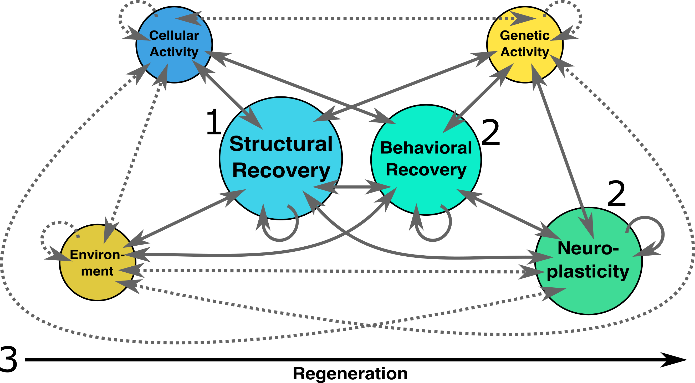

Research
Our Research
We are building evidence that tissue regeneration is an emergent property of the coaction between genetic, cellular, environmental, behavioral, neural signals etc. We place structural recovery and behavioral recovery at the center of our research, studying how genetic, cellular, environmental, behavioral, neural signals etc. impact structural and behavioral recovery. Our goal is to optimize healing and then unravel the biology underlying this healing.
The diagram above represents the coactions and the emergence of regeneration. Solid lines represent coactions we are directly interested in, while dottled lines represent coactions that exist but are secondary interests. Circles can change in size as the process of regeneration occurs over time, represented by the horizontal arrow on the bottom. The numbers represent our three main projects that begin to tackle this complex and dynamic system.
Currently we focus on three main questions: 1) How can we optimize peripheral nerve healing? 2) What separates the behavior and neuroplasticity of highly regenerative animals from non-regenerative animals? and 3) What are the critical or sensitive periods for optimal tissue regeneration?
Project 1: 👋 How can we optimize peripheral nerve healing?
This project investigates how we can optimize peripheral nerve regeneration. We are currently focused on cutaneous nerve regeneration in rodents using the whisker pad skin of Spiny Mice and cutaneous nerves in neonatal lab mice. The long-term goal is to guide peripheral nerves in humans to regenerate the neural connective tissues that insulate and support nerves. At the moment humans can only regenerate single myelinated axons rather than bundles of nerves.
Relevant Publications
Project 2: 🧠 The behavior and neuroplasticity of highly regenerative animals
Highly regenerative animals like salamanders, zebrafish, spiny mice, etc. not only regenerate missing tissue, they also use the new tissue as if the injury never occured. Research in behavioral neuroscience shows that injuries lead to brain reorganization and that behavioral therapies like constraint induced movement therapy can improve recovery after limb loss, stroke, or cerebral palsy. Do highly regenerative animals use novel behaviors to optimize behavioral recovery? Do brain connections change after injury and then remap as the structure regenerates? These questions and many more remain unexplored, but could be essential for bringing successful regenerative therapies to the clinic.
Relevant Publications
- Varholick (2025). "Integrating regenerative biology with developmental psychobiology to understand behavioral recovery." Developmental Dynamics Early View. PDF, DOI Link
- Kidd et al. (2024). "Stroke-induced neuroplasticity in the spiny mouse, Acomys cahirinus." npj Regenerative Medicine 9, 41. PDF, DOI Link
Project 3: 🕔 When is the sensitive period for tissue regeneration?
Development has sensitive periods when critical events must occur for the next "step" of development. Regeneration is considered to be a window into development, reusing developmental programs -- it is essentially re-opening a critical period of development to restart the development of the injured tissue. If we can undestand when these sensitive periods occur during regeneration, we can optimize the quality of regeneration and ensure that abnormal development or an undesired outlier phenotype does not occur.
Relevant Publications
- Varholick et al. (2024). "Older 6-9-month-old spiny mice (Acomys cahirinus) have delayed and spatially heterogeneous ear wound regeneration." Biology Open, 13 (10): bio060565. PDF, DOI Link, First Author Interview